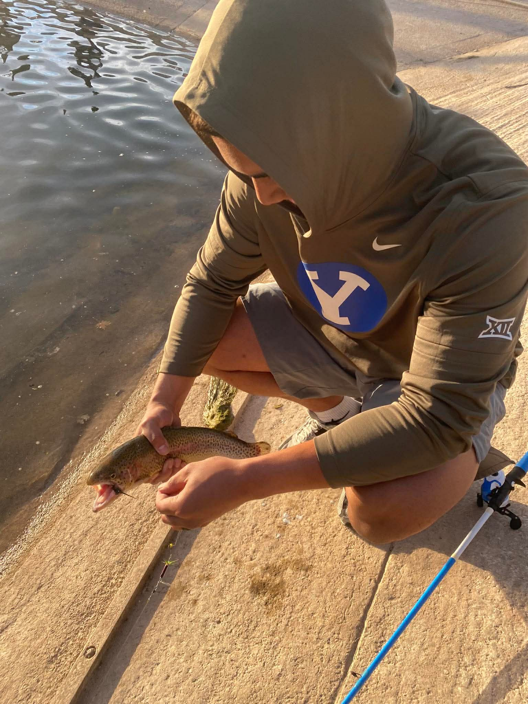
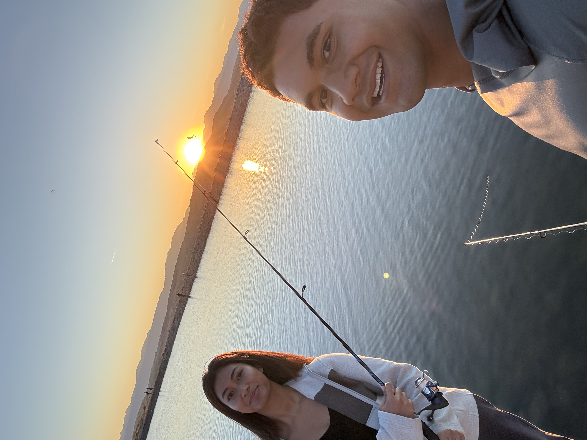

How I Got Into Fishing
Fishing is one of those things that just kind of sticks with you. I started fishing around Utah a while back and now it's become one of my favorite ways to decompress from school. There's nothing better than sitting by the water early in the morning with a line in the water.
Utah honestly has some really underrated fishing. Between Utah Lake, Strawberry Reservoir, Flaming Gorge, and all the smaller spots, there's always somewhere new to explore. My dream is to eventually fish big lakes outside of Utah — there are some seriously incredible fisheries out there I want to hit.

Nothing beats getting out on the water
Utah Lake 🏔️
Utah Lake is my go-to spot. It's right in my backyard here in Provo and it never gets old. The lake gets a bad reputation sometimes but honestly the fishing there is really solid. You can pull carp, catfish, and bass out of there pretty regularly. I've spent a ton of hours on that shoreline and it's where I caught some of my biggest fish.
The best spots along Utah Lake are the rocky points and the areas near the inlets. Early morning is when the fish are most active and you can sometimes watch huge carp rolling on the surface before you even cast.
Jump to: My Fishing Bucket List ↓
Fish I've Caught
Here's a breakdown of what I've caught in Utah so far, along with some tips that worked for me:
-
Common Carp
- Found in Utah Lake and most slow-moving water
- Gear that works: corn kernels, dough bait, small hooks
- Best time: early morning when they're feeding shallow
- These things fight hard — super fun on lighter gear
-
Channel Catfish
- Utah Lake and the Jordan River have tons of them
- Gear that works: chicken liver, nightcrawlers, stink bait
- Best time: night fishing — they really come alive after dark
-
Rainbow Trout
- DWR stocks them in a lot of Utah reservoirs and ponds
- Gear that works: PowerBait, small spinners, worms
- Best time: spring and fall when the water cools down
- Great eating fish — one of the tastiest you can catch
-
Largemouth & Smallmouth Bass
- Found around structure — docks, rocks, weeds
- Gear that works: soft plastics, crankbaits, topwater lures
- Best time: summer mornings and evenings
- Smallmouth in particular put up an amazing fight
🎯 My Fishing Bucket List
There are two fish at the top of my must-catch list. Both can actually be found in Utah which makes me even more motivated:
- 🐟 Tiger Muskie — Starvation Reservoir has them. A hybrid fish (muskellunge x northern pike) and probably the hardest freshwater fish to land. Called "the fish of 10,000 casts" for a reason.
- 🐟 Northern Pike — There are actually pike in Utah and I want one SO bad. Aggressive ambush predators that can get massive. Definitely one of the coolest looking fish in freshwater.
Beyond Utah, some places on my dream list:
- Lake Erie for Walleye
- The Amazon for Peacock Bass
- Canada or Alaska for Trophy Pike and Lake Trout
- The Great Lakes for Salmon and Steelhead
📷 My Catches
A few of my recent catches — Utah has more to offer than people think!

Big ol' carp from Utah Lake

Rainbow trout — always fun to catch

Sunset on the water — best way to end a day
🎥 Pike Fishing in Utah
I found out Utah actually has Northern Pike and this video sold me on making it a mission to catch one. Watch this and tell me you don't want to go fishing immediately.
📊 Fun Fish Visualization
Found this cool Tableau viz while looking up fishing data — figured I'd throw it on here.